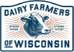
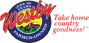

Dairy Resources
Buy Local
Support dairy farms by shopping local! Enter your zip code to locate local products. You can find cheese stores, creameries, dairy plants, and the list goes on!
Enter Zip Code
Dairy Industry Sources
There are multiple websites and publications that educate agriculturalists and consumers about the agriculture and the dairy industry. Here are a few that can get you started!
 Dairy Farmers of Wisconsin  Westby Cooperative Creamery Wisconsin Farm Bureau Federation MidWest Farm Report
Gather Wisconsin
MidWest Farm Report
Gather Wisconsin